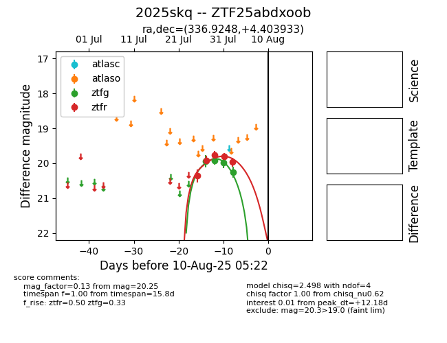

Target 2025skq at 2025-08-10 05:22, see:
FINK: fink-portal.org/2025skq
Lasair: lasair-ztf.lsst.ac.uk/objects/2025skq
ALeRCE: alerce.online/object/2025skq
TNS: wis-tns.org/object/2025skq
YSE: ziggy.ucolick.org/yse/transient_detail/2025skq
alt names
ZTF25abdxoob (ztf,fink)
2025skq (tns,yse)
coordinates:
equatorial (ra, dec) = (336.9248,+4.40393)
galactic (l, b) = (69.6515,-43.11539)
photometry
last ztfg=20.25, ztfr=19.97
4 ztfg, 5 ztfr detections
